Cluster
Comenzaremos esta parte de a práctica explorando la capacidad que tiene nuestro dataset de ser segmentado calculando sobre el dataset un estadístico denominado “Estadístico de Hopkins” en el que, si tiene un valor cercano a uno y mayor de 0.5, indica que muy posiblemente el dataset pueda ser dividido en clusters de manera significativa.
Como vemos por el valor que tiene esta métrica, sí que parece que nuestro dataset pueda ser dividido en grupos.
## [1] 0.9368696En primer lugar, intentaremos realizar el clustering sólo sobre las variables contínuas o numéricas, ignormando las variables factoriales, debido a que se puede aplicar directamente sobre ellas la métrica euclidea y, por tanto, el algoritmo k-means. En primer lugar intentaremos obtener el número óptimo de grupos que podemos formar mediante un gráfico de silueta:

Este gráfico nos muestra que el valor óptimo se encuentra en 2. No obstante, elegiremos 3 grupos por tener la anchura de la silueta un valor similar. El gráfico con el resultado del proceso de clustering una vez realizado una descomposición PCA sobre el dataset y cogido las dos dimensiones más significativas es el siguiente:

Ahora intentaremos realizar el proceso de clustering teniendo en cuenta también las variables cualitativas (tanto factoriales como ordinales). Para ello calcularemos una matriz de disimilaridad denominada “matriz de disimilaridad de Gower”. Lo haremos sobre el conjunto de todas las variables y el conjunto de variables candidatas obtenido en el paso anterior para nuestro modelo de discriminación de “casas caras” y “casas baratas”.
Una vez calculada estas matrices, obtendremos los elementos más parecidos para ver que los resultados son coherentes. En primer lugar realizaremos esta comprobación sobre el dataset completo sin filtrar, mostrando los elementos más similares:
| MSSubClass | MSZoning | LotArea | Alley | LotShape | LandContour | LotConfig | Neighborhood | Condition1 | BldgType | HouseStyle | OverallQual | OverallCond | YearBuilt | YearRemodAdd | RoofStyle | RoofMatl | Exterior1st | Exterior2nd | MasVnrType | MasVnrArea | ExterQual | ExterCond | Foundation | BsmtQual | BsmtCond | BsmtExposure | BsmtFinType1 | BsmtFinSF1 | BsmtFinType2 | BsmtUnfSF | TotalBsmtSF | Heating | HeatingQC | CentralAir | Electrical | 1stFlrSF | 2ndFlrSF | GrLivArea | BsmtFullBath | BsmtHalfBath | FullBath | HalfBath | BedroomAbvGr | KitchenAbvGr | KitchenQual | TotRmsAbvGrd | Functional | Fireplaces | FireplaceQu | GarageType | GarageYrBlt | GarageFinish | GarageCars | GarageArea | GarageQual | GarageCond | PavedDrive | WoodDeckSF | OpenPorchSF | EnclosedPorch | 3SsnPorch | ScreenPorch | PoolQC | Fence | MoSold | YrSold | SaleType | SaleCondition | TotalSF | Total_Bathrooms | Total_porch_SF | SalePrice |
|---|---|---|---|---|---|---|---|---|---|---|---|---|---|---|---|---|---|---|---|---|---|---|---|---|---|---|---|---|---|---|---|---|---|---|---|---|---|---|---|---|---|---|---|---|---|---|---|---|---|---|---|---|---|---|---|---|---|---|---|---|---|---|---|---|---|---|---|---|---|---|---|---|
| duplex_all_style_age | RL | 8.979669 | NA | Reg | Lvl | Inside | SawyerW | Feedr | Duplex | 2Story | 7 | 5 | 1990_ | 1990_ | Hip | CompShg | VinylSd | VinylSd | BrkFace | 23 | TA | TA | PConc | Ex | TA | No | Unf | 6.710523 | Unf | 5.855072 | 1168 | GasA | Ex | Y | SBrkr | 1168 | 1619 | 7.93308 | 2 | 0 | 4 | 2 | 6 | 1.098612 | TA | 8 | Typ | 2 | TA | BuiltIn | 2000 | Fin | 4 | 820 | TA | TA | Y | 312 | 0 | 0 | 0 | 0 | NA | NA | 10 | 2009 | WD | Normal | 8.282736 | 7 | 312 | 12.30342 |
| duplex_all_style_age | RL | 8.984318 | NA | Reg | Lvl | Inside | SawyerW | Feedr | Duplex | 2Story | 7 | 5 | 1990_ | 1990_ | Hip | CompShg | VinylSd | VinylSd | BrkFace | 23 | TA | TA | PConc | Ex | TA | No | Unf | 6.710523 | Unf | 5.855072 | 1168 | GasA | Ex | Y | SBrkr | 1168 | 1619 | 7.93308 | 2 | 0 | 4 | 2 | 6 | 1.098612 | TA | 8 | Typ | 2 | TA | BuiltIn | 2000 | Fin | 4 | 820 | TA | TA | Y | 312 | 0 | 0 | 0 | 0 | NA | NA | 10 | 2009 | WD | Normal | 8.282736 | 7 | 312 | 12.30375 |
Mostraremos también los elementos más similares para el dataset limitado a las variables que mejor parecen discriminar entre precios baratos y caros:
| LotArea | GrLivArea | BedroomAbvGr | MSSubClass | 1stFlrSF | FullBath | Neighborhood | Total_Bathrooms | TotalBsmtSF | YearBuilt | MSZoning | BldgType | GarageType | OverallCond | BsmtUnfSF | Heating | 2ndFlrSF | LotShape | OverallQual | BsmtFinSF1 | BsmtQual | MasVnrArea | SaleCondition | KitchenQual | SaleType | HalfBath | GarageArea | SalePrice | Exterior1st |
|---|---|---|---|---|---|---|---|---|---|---|---|---|---|---|---|---|---|---|---|---|---|---|---|---|---|---|---|---|
| 9.287394 | 7.09091 | 3 | duplex_all_style_age | 1200 | 3 | Edwards | 6 | 1200 | 1980_1990 | RL | Duplex | NA | 5 | 0 | GasA | 0 | Reg | 5 | 7.09091 | Gd | 0 | Alloca | TA | WD | 0 | 0 | 12.09245 | Plywood |
| 9.287394 | 7.09091 | 3 | duplex_all_style_age | 1200 | 3 | Edwards | 6 | 1200 | 1980_1990 | RL | Duplex | NA | 5 | 0 | GasA | 0 | Reg | 5 | 7.09091 | Gd | 0 | Alloca | TA | WD | 0 | 0 | 12.09514 | Plywood |
Ahora realizaremos el mismo proceso mostrando los elementos más disimilares dentro del dataset teniendo en cuenta todas las variables:
| MSSubClass | MSZoning | LotArea | Alley | LotShape | LandContour | LotConfig | Neighborhood | Condition1 | BldgType | HouseStyle | OverallQual | OverallCond | YearBuilt | YearRemodAdd | RoofStyle | RoofMatl | Exterior1st | Exterior2nd | MasVnrType | MasVnrArea | ExterQual | ExterCond | Foundation | BsmtQual | BsmtCond | BsmtExposure | BsmtFinType1 | BsmtFinSF1 | BsmtFinType2 | BsmtUnfSF | TotalBsmtSF | Heating | HeatingQC | CentralAir | Electrical | 1stFlrSF | 2ndFlrSF | GrLivArea | BsmtFullBath | BsmtHalfBath | FullBath | HalfBath | BedroomAbvGr | KitchenAbvGr | KitchenQual | TotRmsAbvGrd | Functional | Fireplaces | FireplaceQu | GarageType | GarageYrBlt | GarageFinish | GarageCars | GarageArea | GarageQual | GarageCond | PavedDrive | WoodDeckSF | OpenPorchSF | EnclosedPorch | 3SsnPorch | ScreenPorch | PoolQC | Fence | MoSold | YrSold | SaleType | SaleCondition | TotalSF | Total_Bathrooms | Total_porch_SF | SalePrice |
|---|---|---|---|---|---|---|---|---|---|---|---|---|---|---|---|---|---|---|---|---|---|---|---|---|---|---|---|---|---|---|---|---|---|---|---|---|---|---|---|---|---|---|---|---|---|---|---|---|---|---|---|---|---|---|---|---|---|---|---|---|---|---|---|---|---|---|---|---|---|---|---|---|
| 1_story_1946_ | 4 | 9.587749 | NA | Reg | Low | Inside | IDOTRR | Norm | 1Fam | 1Story | 1 | 5 | 1950_1960 | 1950_1960 | Gable | CompShg | AsbShng | VinylSd | None | 0 | Fa | Po | Slab | NA | NA | NA | NA | 0.000000 | NA | 0.000000 | 0 | Wall | Po | N | FuseA | 733 | 0 | 6.598509 | 0 | 0 | 1 | 0 | 2 | 0.6931472 | Fa | 4 | 7 | 0 | NA | Attchd | 1952 | Unf | 2 | 487 | Fa | Po | N | 0 | 0 | 0 | 0 | 0 | NA | NA | 2 | 2008 | WD | Abnorml | 6.597146 | 1.0 | 0 | 12.05805 |
| 2_story_1946_ | RL | 11.064887 | NA | IR3 | Bnk | Corner | Edwards | Feedr | 1Fam | 2Story | 10 | 5 | 1990_ | 1990_ | Hip | ClyTile | Stucco | Stucco | Stone | 796 | Ex | TA | PConc | Ex | TA | Gd | Unf | 8.638526 | Unf | 6.146329 | 6110 | GasA | Ex | Y | SBrkr | 4692 | 950 | 8.638171 | 2 | 0 | 2 | 1 | 3 | 0.6931472 | Ex | 12 | Typ | 3 | Gd | Attchd | 2008 | Fin | 2 | 1418 | TA | TA | Y | 214 | 292 | 0 | 0 | 0 | Gd | NA | 1 | 2008 | New | Partial | 9.371779 | 4.5 | 506 | 11.98293 |
Y teniendo en cuenta ahora las variables seleccionadas como más relevantes para distinguir casas baratas de casas caras:
| LotArea | GrLivArea | BedroomAbvGr | MSSubClass | 1stFlrSF | FullBath | Neighborhood | Total_Bathrooms | TotalBsmtSF | YearBuilt | MSZoning | BldgType | GarageType | OverallCond | BsmtUnfSF | Heating | 2ndFlrSF | LotShape | OverallQual | BsmtFinSF1 | BsmtQual | MasVnrArea | SaleCondition | KitchenQual | SaleType | HalfBath | GarageArea | SalePrice | Exterior1st |
|---|---|---|---|---|---|---|---|---|---|---|---|---|---|---|---|---|---|---|---|---|---|---|---|---|---|---|---|---|
| 10.578751 | 8.536211 | 2 | 1_story_1946_ | 5095 | 2 | Edwards | 4 | 5095 | 1990_ | RL | 1Fam | Attchd | 5 | 6.990257 | GasA | 0 | IR1 | 10 | 8.296796 | Ex | 1224 | Partial | Ex | New | 1 | 1154 | 12.34949 | CemntBd |
| 8.881975 | 7.882692 | 6 | duplex_all_style_age | 862 | 3 | SWISU | 3 | 0 | 1960_1970 | RH | Duplex | NA | 6 | 0.000000 | GasA | 1788 | Reg | 4 | 0.000000 | NA | 0 | Normal | TA | WD | 0 | 0 | 12.25132 | Plywood |
Por último, obtendremos el gráfico número de clústeres/“Silouette with” para intentar ver cuál es el número óptimo de divisiones, en primer lugar para todo el dataset:

Y ahora realizaremos el mismo gráfico para las variables más discriminatorias:
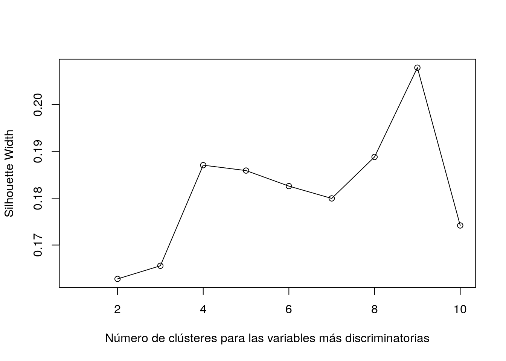
Como vemos el número óptimo se encuentra en 2 elementos para el dataset completo, y de 2 para el dataset con las variables a las que restringuremos el modelo de clasificación. No obstante, para analizar este último caso, elegiremos 4 variables. A continuación utilizando esta matriz de disimilaridades y el proceso de clustering PAM, calcularemos a qué elemento dentro del cluster pertenece cada uno de los registros de nuestro dataset.
A continuación realizaremos un proceso de reducción de dimensionalidad a 2 dimensiones utilizando el algoritmo TSNE para hacernos una idea más clara de la forma que tienen estas agrupaciones. En primer lugar realizaremos el proceso en sobre todas las variables del dataset, obteniendo el siguiente resultado:
Ahora intentaremos interpretar el resultado de este proceso de clustering. Para ello, en un primer momento observaremos si esta segmentación ha sido realizada teniendo el precio de cada casa como variable principal
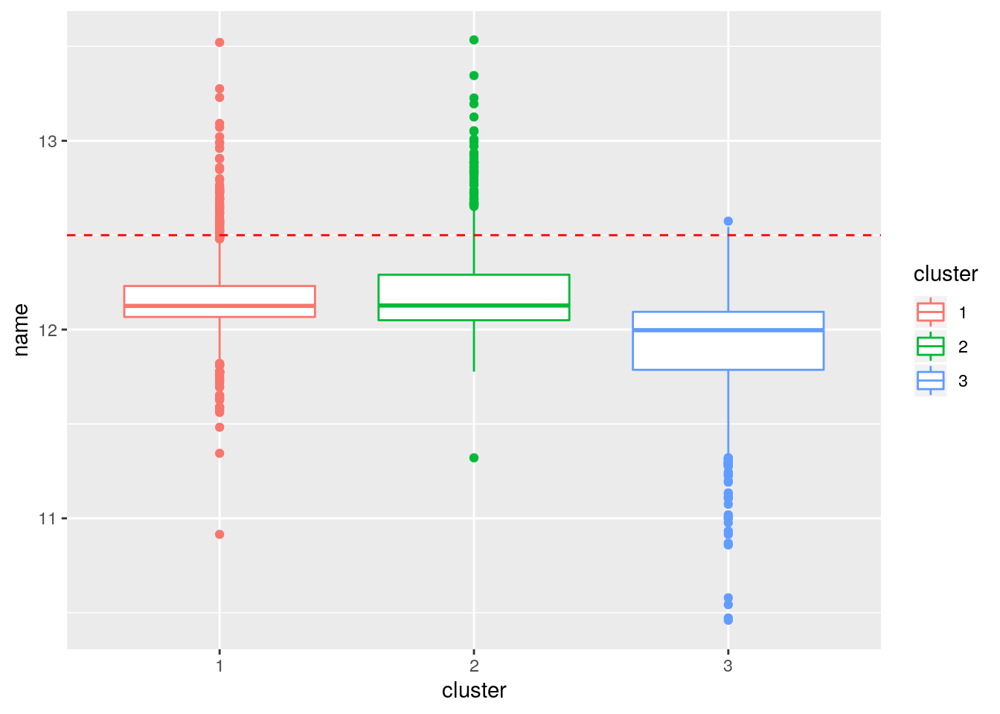
Observamos que las casas de tipo 1 y tipo 2 tienen casi toda la población de casas denominadas “caras” (además de otros tipo de casas con inferior precio pero aun así superior en la mayor parte de los casos a la media del grupo 3) y el grupo 3 tiene únicamente casas baratas.
Ahora dibujaremos el resultado del proceso de reducción de dimensionalidad del dataset con la variable resultado del proceso de clústering sobr el plano:
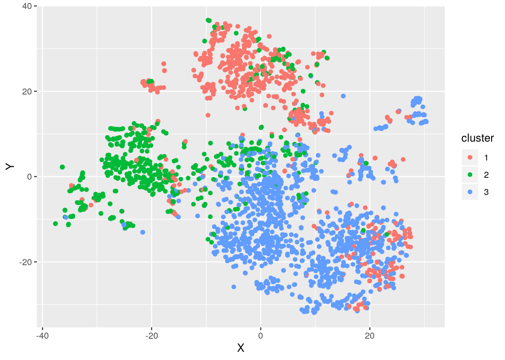
El proceso de clustering, dejando aparte las pequeñas islas que aparecen, sí que parece habér discriminado bien en las 3 clases distintas. No obstante, se obserba que las casas del tipo “1” aparecen también con profusión en las de tipo “2”, y las de tipo “2” en las de tipo “1”. Como veremos, las poblaciones de tipo “1” y “2” encierran todas las casas clasificadadas como caras, y eso no es preocupante. Lo preocupante es que según este gráfico, algunas casas de tipo “1” aparecen junto a las casas de tipo 3. Esas muy posiblemente sean casas de categoría “barata” que han sido mal clasificadas por el algoritmo de clustering. Lo mismo ocurre con las de clase 2 pero en menor medida.
Realizaremos el mismo proceso limitándonos a las variables que hemos considerado más relevantes para distinguir las casas que denominamos “caras” de las baratas. En un primer momento dibujaremos el mismo diagrama que compara la distribución de precios en función del resultado del proceso de clustering:

Lo que comprobamos ahora es que en la categoría de “casas baratas” ha aparecido un nuevo grupo que no se ha hecho evidente al utilizar todas las variables del dataset. Como en el anterior caso, las categorías 1 y 2 son las que tienen casas de mayor valor.
Como antes, realizaremos la proyección en el plano de los elementos del dataset con las variables que únicamente consideraremos en nuestro modelo.
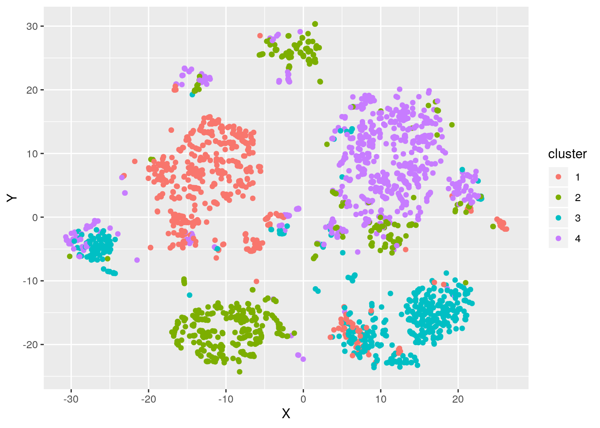
Al hacer esta división sí que se observa una mayor separación de los elementos que contienen las casas “caras”, y se observa que aparecen dos islas en los grupos 3 y 4, que únicamente tienen casas clasificadas como baratas.Sigue habiendo ciertos puntos de los grupos 1 y 2 que se mezclan con los grupos 3 y 4, pero ahora parece que esa mezcla es menos pronunciada.
Para ayudar a la interpretación de los resultados obtenidos por el proceso de clustering y ver de forma más clara el criterio que ha seguido dicho algoritmo, construiremos un árbol de decision teniendo como objetivo del mismo el resultado del proceso de clústering. En primer lugar lo haremos sobre el dataset completo. El resultado es el siguiente:
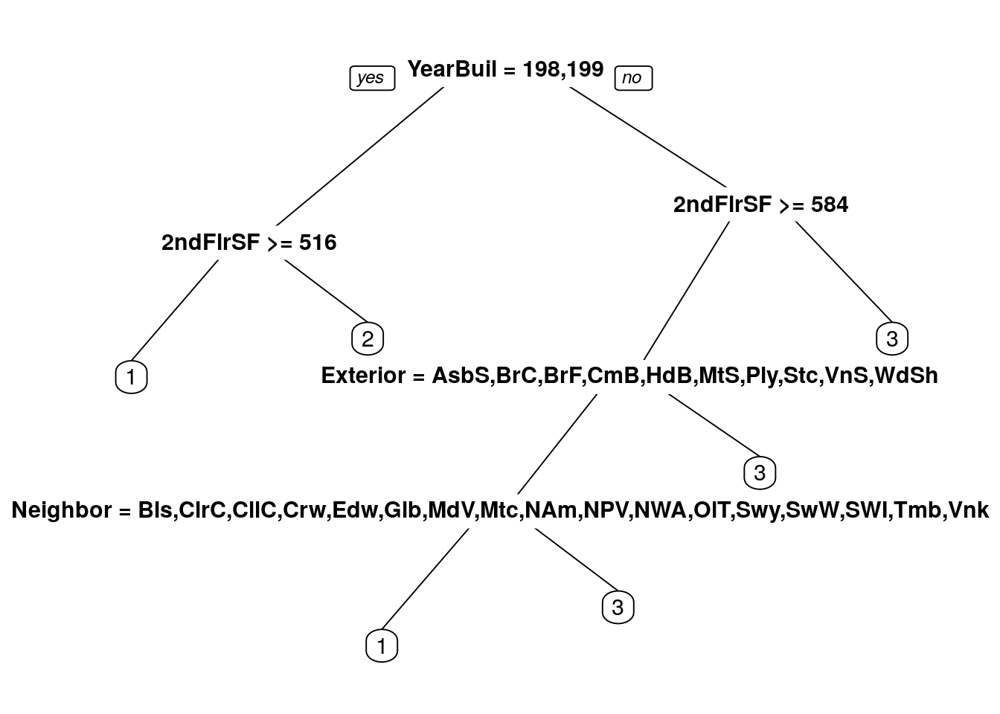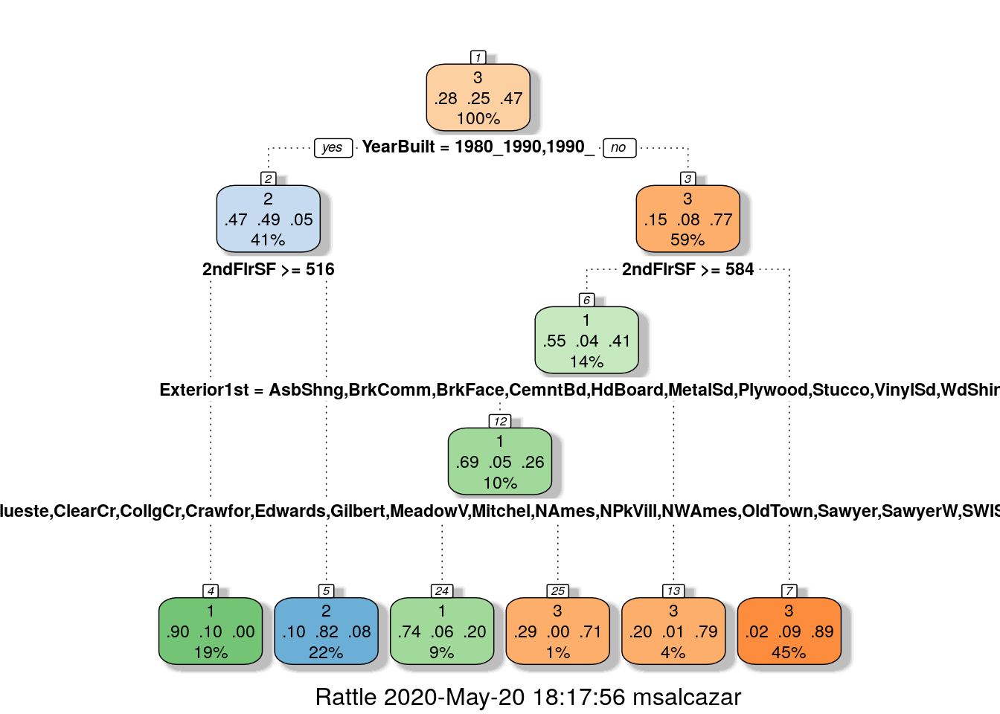
Como vemos con claridad, las principales variables que han participado en este proceso han sido: el año de construcción, la superficie de la segunda planta, los materiales utilizados en la fachada y por último el vecindario en el que se encuentran dichas casas. La mayoría de las casas caras (categorías 1 y 2) han sido construidas entre los años 1980 y 1990 y pertenecen a unos vecindarios muy concretos y con unos tipos de materiales en la fachada muy específicos. La diferencia entre los grupos 1 y 2 se encuentra en la superficie de la segunda planta, siendo todas las casas construidos en el grupo 2 también en la década de los 80.
Repetiremos este mismo proceso teniendo únicamente las variables seleccinadas para el modelo de clasificación. El resultado es el que se muestra a continuación:
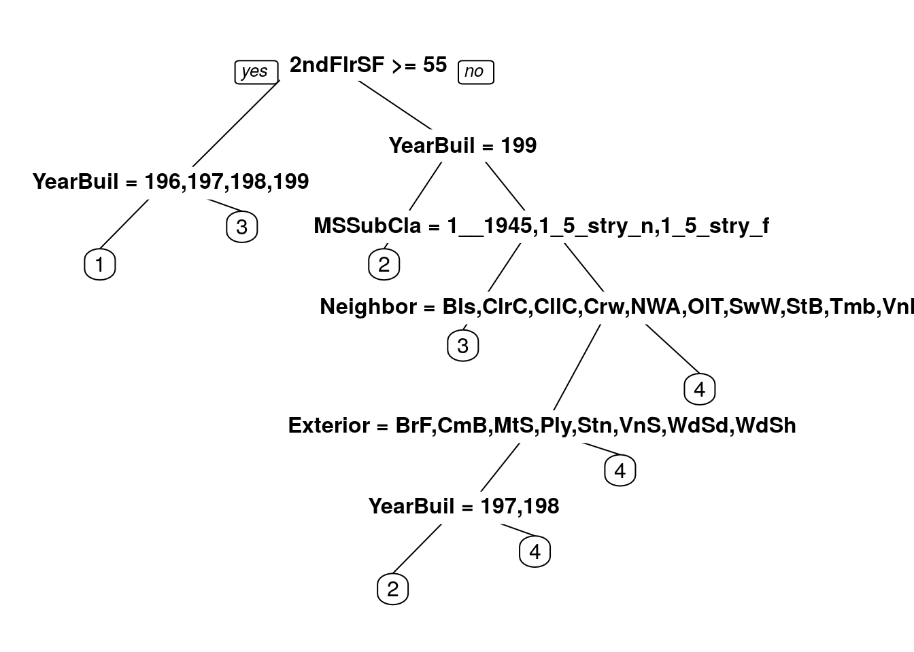
El resultado es similar al obtenido con anterioridad con una diferencia. Al no tener las variables elegidas aquella que indica el tipo de materiales, el algoritmo en su lugar ha elegido como variable sustitutiva el estilo arquitectónico de la casa. En este caso vemos que las casas de tipo 1 y 2 han sido construidas en la década de los 80 pero pertenecen a estilos arquitectónicos distintos. Sigue siendo tremendamente discriminante el vecindario. Las clasas de categoría 3 pertenecen en su mayor parte a los vecindarios mostrados en el árbol, y la diferencia entre las casas de categoría 3 y 4 están en la superficie del sótano, en el vecindario y en el estilo arquitectónico de las mismas. Algunas casas caras del tipo 1 con elevadoas superficies del segundo piso, aparecen mezcladas entre las casas de tipo 3 y 4, pero aun así hay una diferencia entre estos dos grupos: en la superfice de sótano finalizado.
Como vemos las variables que ha seleccionado principalmente el algoritmo de clústering para ayudar a discriminar las casas baratas de las caras son: - El año de construcción: discierne entre construcciones en la década de los 80 de casas más antíguas, que parecen indicar unos tipos de edificios históricos específico - El vecindario: muchas de las casas más caras parecen estar concentradas en unos pocos vecindarios. Y cuando estas casas aparecen en vecindarios más probres, lo hacen con unos estilos arquitectónicos y superficies de la segunda planta máyores. - El estilo arquitectónico. - Los materiales de las fachadas.
Realizaremos una serie de gráficas para corroborar estas hipótesis. En primer lugar, las siguientes dos gráficas muestran: la media de precio por vecindario (primera gráfica) y el valor máximo del precio por vecindario:
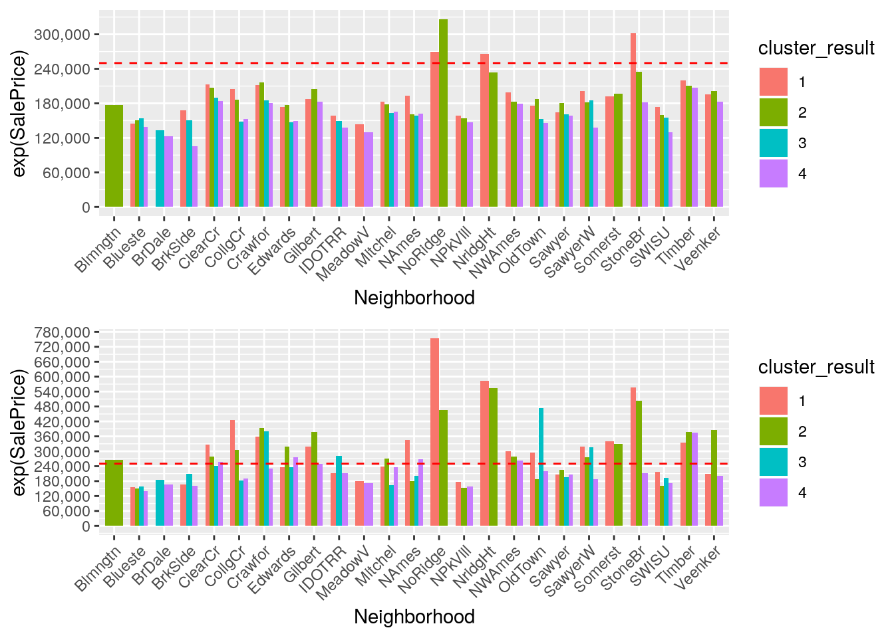
Observamos que hay 3 vecindarios (NoRidge, NrtdgHt y StoneBr) en el cual el precio medio de las casa es sustancialmente más caro , así como el valor máximo de las mismas. En estos vecindarios hay principalmente casas de categoría de clustering “1” y “2”, aunque hay algunas de tipo 4 en StoneBR. En el resto de vecindarios la media es significativamente menor, habiendo 3 vecindarios “collgrCr, Crawfor y Gilber” en las que se mezclan categorías 1,2 y 3 pero con precios máximos significativamente menores a los de los barrios comentados con anterioridad.
Realizaremos este mismo análisis para el año de construccion. las siguientes dos gráficas muestran la media de precio por década en la que se contruyó y el valor máximo del precio por cada una de las décadas:
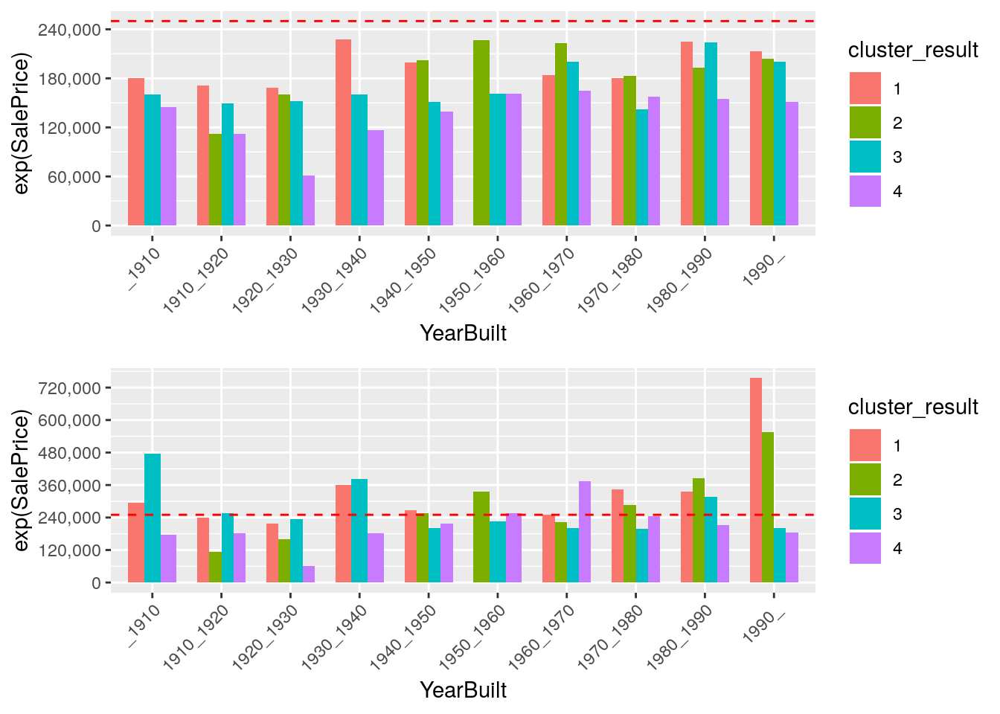
La gráfica de la media no nos da mucha información, pero vemos claramente en la otra gráfica que, efectivamente, en las décadas de los 80 y 90 aparecen una gran cantidad de casas clasificada en los grupos 1 y 2, que contienen casas con precio máximo más significativo. En la década de 1900-1910 aparece alguna casa de categoría 3 (clasificada como “barata”) que desmiente que todas las casas de esta categoría son necesariamente baratas. Durante el resto de los años sí que se construyeron algunas casas consideradas como “caras” pero con un valor mucho menor en el precio máximo. Y generalmente, estas casas, son de categoría 1,2 y 3.
Realizaremos este mismo análisis para la variable “vecindario”. las siguientes dos gráficas muestran la media de precio por vecindario en la que se contruyó y el valor máximo del precio por cada uno de estos vecindarios:
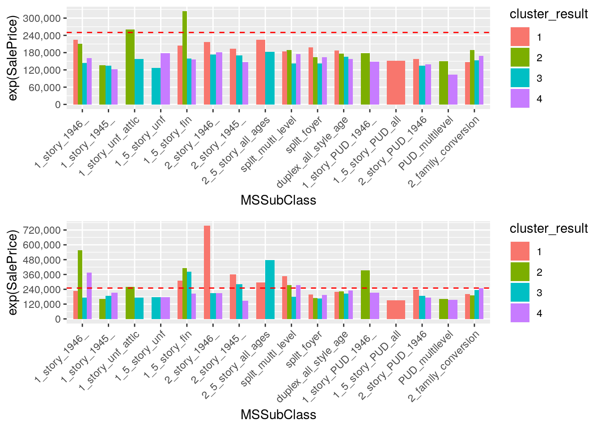
La gráfica anterior (sobre todo la del valor máximo) parece indicar que hay 4 vecindarios en los se concentran las casas con mayor valor másimo, y que estan son principalmente de categorías 1 y 2, habiendo alguna excepción dentro las categorías 3 y 4, pero de menor valor que las de 1 y 2.
A continuación mostraremos una gráfica con el valor máximo de la casa según los materiales utilizados en la fachada, para ver si esta varible, tal y como nos dice unos de los procesos de clusterización, es relevanta para distinguir las casas baratas de las caras.
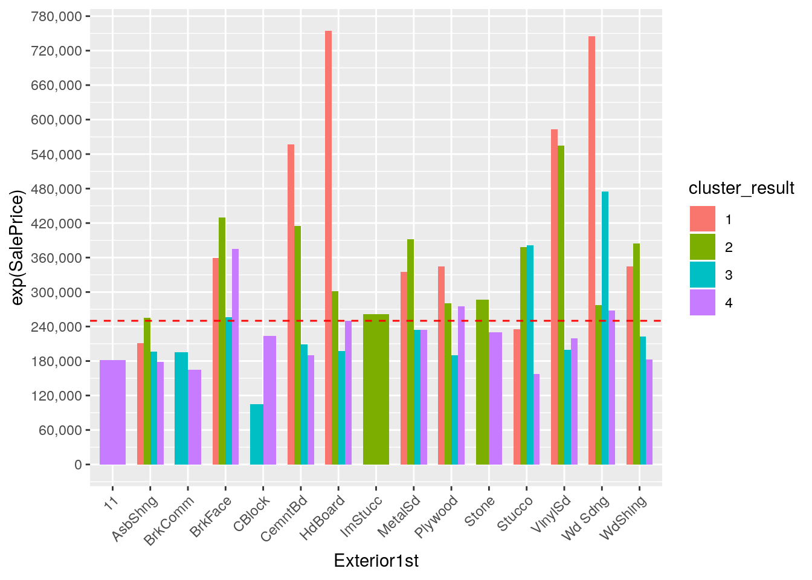
Se muestra en la anterior gráfica que, efectivamente, hay 6 materiales utilizados en casas de categoría 1 y 2 que podrían ser relevantes para ayudar a discriminar estas casas.
Y por último, realizaremos una gráfica con la variable “Calidad de la casa evaluada en una escala de 0 a 10”.
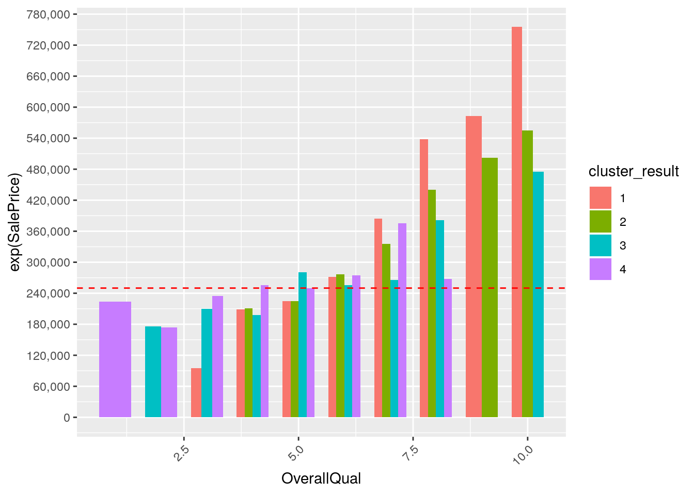
Se muestra en esta gráfica que las categorías 1 y 2 tienen casas con valor máximo de precio que están en en rango de 7,5 a 10. Hay alguna casa de categoría 3 que tiene una valoración de 10 puntos y un valor muy elevado en el precio. Se observa también que los valores máximos de 0 a 7,5 son sustancialmente menores y hay casas de todos los tipos del cluster.
Ahora dibujaremos un gráfico que muestra diversas variables que muestran superficies numéricas de las casas en función de las categorías realizadas por el algoritmo de clústering con las variables seleccionadas para nuestro modelo:
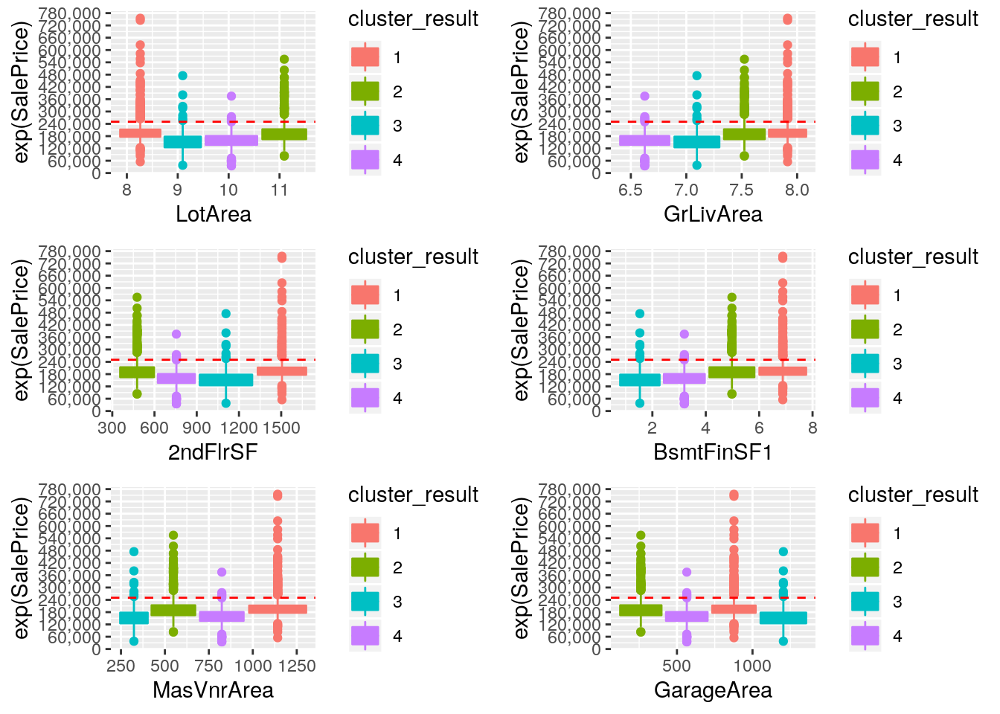
En estas gráficas se observa claramente que: - En cuanto al área del segundo piso, las categorías 1 y 2 tienen una superficie superior a 1000 (pies al cuadrado?) y hay un conjuto de casas con estas superficios con precios mucho más elevados que la media. - Curiosamente, el área del garage todal es mucho menor para las casas de categoría 2 que las de 1, pese a que algunas tienen precios bastante elevados. - Lo mismo ocurre con la variable “MasVnrArea”, existen un grupo de casas de la categoría 2 con precios elevados y relativamente bajo valor de esta variable - Las casas de categoría 1 y 2 en general tienen más area habitable, de segundo piso y de sótano “finalizado” o útil.
Ahora intentaremos utilizar otro algoritmo de clústering distinto, DBSCAN, basado en agrupamiento espacial basado en densidad. No obstante, debido a la naturaleza de los datos, no hemos sido capaces de dividir este dataset en más de 1 cluster distinto, por mucho que hemos jugado como parámetros.
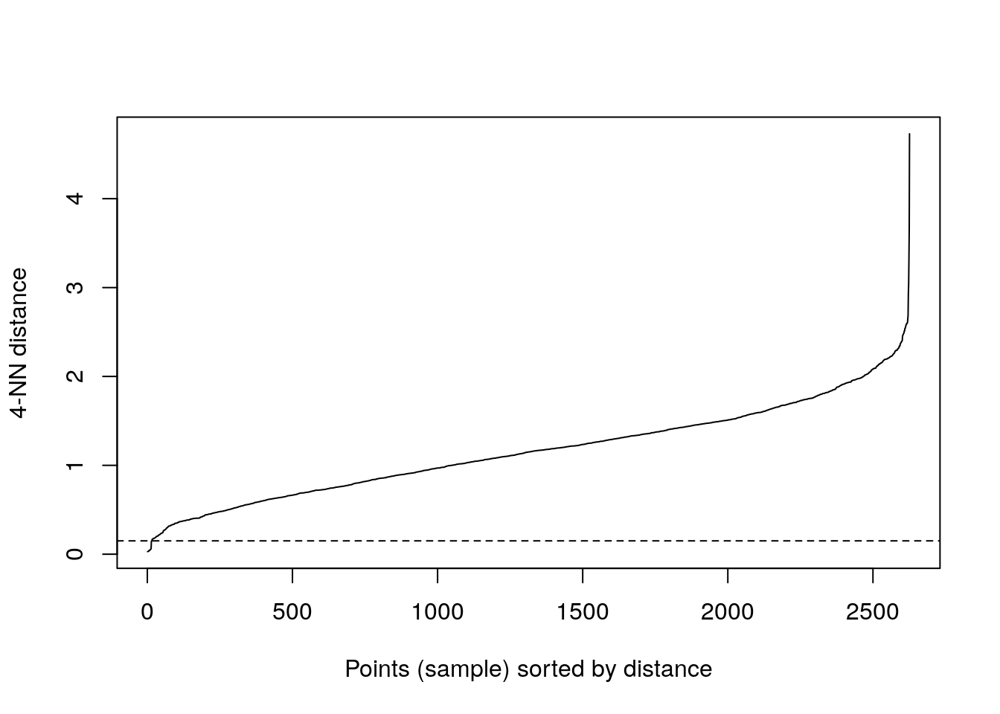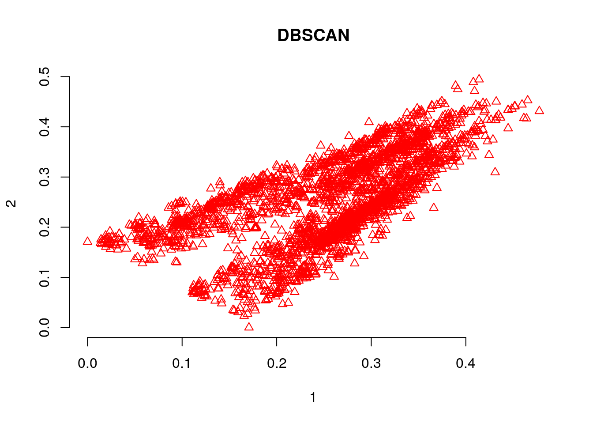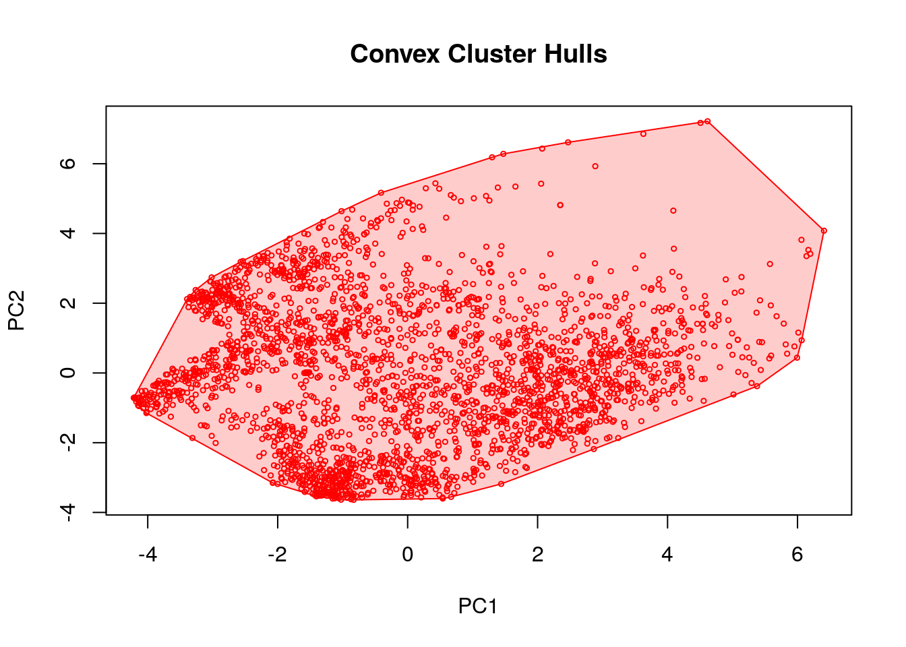